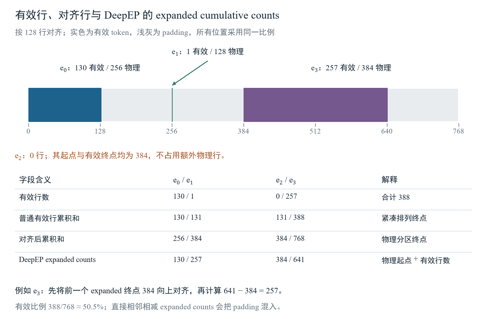
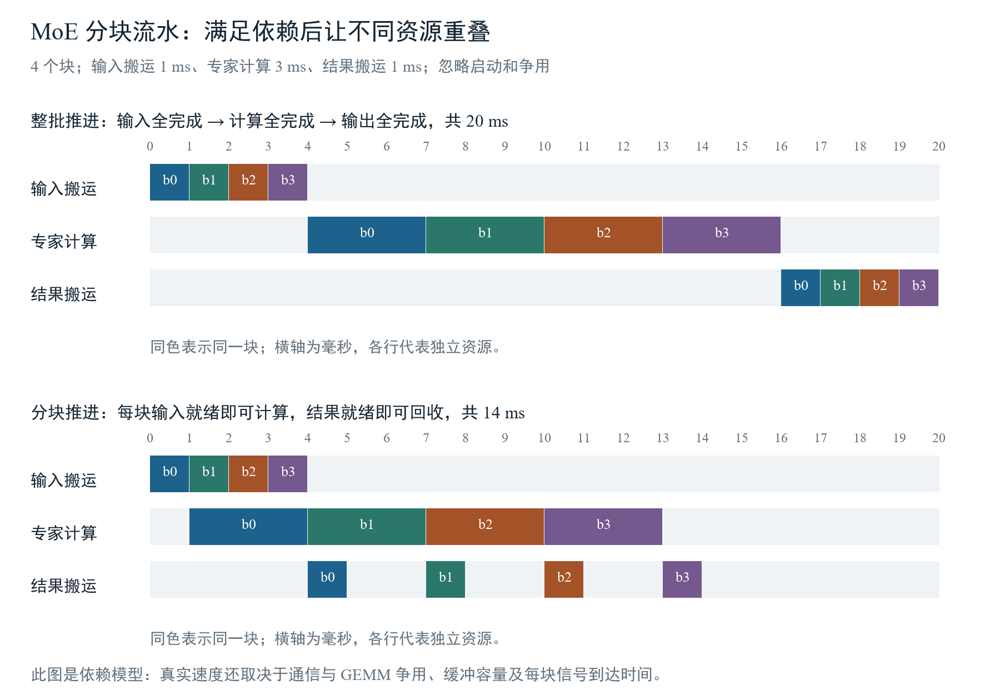

代码块旁的行号链接指向本课采用的提交，仓库及许可见课末。
1 MoE 的总参数与激活参数
MoE 层通常保留 Transformer 的残差与 attention，将某些稠密 FFN 换为多个专家。每个 token 的 hidden state xt=[D] 先经过 router，选择 K 个专家，分别计算后按路由权重求和。有些模型还包含每个 token 都使用的 shared expert。稀疏性发生在 token 到专家的连接上，单个专家内部仍可使用稠密矩阵乘法。
设 routed experts 数量 E，每个采用无 bias 的 SwiGLU，三个矩阵为 Wg、Wu:[D,F]，Wd:[F,D]。全部 routed 参数为 3EDF，单 token 的专家矩阵乘法约 6KDF FLOPs。这里不含 router、shared expert、通信和非线性运算。E 增大主要扩充总参数，K 增大直接增加每个 token 的专家工作量。
采用教学尺寸 D=7168、F=2048、E=256、K=8。每个专家 44,040,192 个参数，BF16 为 84 MiB；整层 routed 权重为 21 GiB。EP=8 且每 rank 保存 32 个不同专家时，每 rank 为 2.625 GiB，尚未计算 optimizer state、shared 分支和临时缓冲。单 token 访问的 8 个专家合计 672 MiB 权重，但一个 batch 的 token 可能覆盖全部 256 个专家，不能把整层常驻权重也缩成八个专家。
在这些条件下，单 token 的专家 GEMM 约 0.705 GFLOPs。实际时间还受每个专家拿到多少 token、矩阵行数是否足够大、输入是否在本地以及最忙 rank 何时完成影响。MoE 的 active parameter 数有助于估计算术量，却无法单独预测内存需求或一次请求延迟。
代码 1 DeepSeek-V3 推理参考代码中的 routed 与 shared 两条分支
weights, indices = self.gate(x)
y = torch.zeros_like(x)
counts = torch.bincount(indices.flatten(), minlength=self.n_routed_experts).tolist()
for i in range(self.experts_start_idx, self.experts_end_idx):
if counts[i] == 0:
continue
expert = self.experts[i]
idx, top = torch.where(indices == i)
y[idx] += expert(x[idx]) * weights[idx, top, None]
z = self.shared_experts(x)
if world_size > 1:
dist.all_reduce(y)
return (y + z).view(shape)indices 指定每个 token 的专家，weights 给出对应系数；循环只计算本 rank 拥有且有 token 的专家。y 的局部贡献通过 AllReduce 合并，再与 shared_experts(x) 相加。
这是便于阅读的公开推理参考实现，包含按专家循环和 CPU counts 列表。它表达模型语义，不能当作后文高性能 AllToAll 与 grouped GEMM 的实际执行路径；二者需要通过同一数学结果进行对应。
DeepSeekMoE：细粒度专家与 shared expert
↑ 返回知识点目录2 专家索引与路由权重
一个常见 router 用 Wr=[D,E] 将 X=[T,D] 投影为 logits=[T,E]，再用 softmax 或 sigmoid 得到 scores。Top-K 返回 expert IDs=[T,K]；还需从原 scores 中取出对应 gating weights=[T,K]。是否在所选 K 个分数内部重新归一化、是否乘 route_scale，都属于模型定义，不能为方便通信自行改变。
代码 2 负载偏置参与专家选择
def _select_experts(
self,
scores_TE: torch.Tensor,
expert_bias_E: torch.Tensor | None = None,
**router_kwargs,
) -> torch.Tensor:
scores_for_choice_TE = (
scores_TE if expert_bias_E is None else scores_TE + expert_bias_E
)
return torch.topk(
scores_for_choice_TE, k=self.top_k, dim=-1, sorted=False
).indicesexpert_bias_E 广播到每个 token 的 E 个分数上，然后执行 topk。sorted=False 允许所选专家不按分数排序；后续必须保持 IDs、weights 与各路输出一一对应，不能依靠“第一个一定最大”这样的额外假设。
代码 3 所选专家的权重仍来自原始 scores
remat.recompute_needs_tensor(topk_expert_ids_TK)
# The expert bias is only used for routing. The gating value is
# still derived from the original scores.
topk_scores_TK = scores_TE.gather(dim=-1, index=topk_expert_ids_TK)
if self.route_norm:
denominator_T1 = (
topk_scores_TK.sum(dim=-1, keepdim=True) + self.route_norm_epsilon
)
topk_scores_TK = topk_scores_TK / denominator_T1
topk_scores_TK = topk_scores_TK * self.route_scalegather 使用 expert IDs 从 scores_TE 取数，没有把用于选择的 expert_bias 加入权重。route_norm、epsilon 和 route_scale 再决定输出系数。偏置改变路由选择，不直接改变同一组已选专家的原始分数。
例如原分数 [0.6,0.3,0.1]，K=2；给第三个专家添加选择偏置 0.6 后，选择变成专家 2 和 0。若对所选原分数归一化，输出权重为 1/7 与 6/7。用偏置后的 0.7 与 0.6 计算权重，则会得到另一个函数。这个差异会同时影响前向结果和 router 梯度。
Top-K 的离散索引通常不对“换成另一个专家”的事件直接求导。对已选路径，主任务梯度可以通过连续 gating weights 回到 router；负载损失还可给更广的分数提供梯度。若 K=1 且将唯一分数严格归一化为 1，主任务便失去了这一连续权重通道，除非有其他梯度机制；带 epsilon 的结果也只会留下相应的微小变化。Switch 等具体模型的权重规则必须按其定义读取。
Router 的计算规模为约 2TDE FLOPs，常比专家 GEMM 小；但 top-k、归一化、元数据生成与同步处在 dispatch 之前，容易直接进入关键路径。路由结果还决定后面的局部 shape，因而一次小操作可能控制很大的通信和计算工作。
↑ 返回知识点目录3 四个 token 的 Top-2 分派
以下例子贯穿分发与回收。4 个 token、4 个专家、K=2；EP=2，rank 0 拥有专家 0、1，rank 1 拥有专家 2、3。输入来源为 rank 0 持有 token 0、3，rank 1 持有 token 1、2。为了手算输出，临时令 f_e(x)=(e+1)x，x=[1,2,3,4]；真实模型中 fe 是完整的专家 FFN。
同一批 token 的路由与参考输出
| token / 来源 | 专家与权重 | 专家输出 | 加权结果 |
|---|---|---|---|
| t0 / rank0 | e0:0.75，e2:0.25 | 1，3 | 1.5 |
| t1 / rank1 | e1:0.5，e2:0.5 | 4，6 | 5 |
| t2 / rank1 | e0:0.25，e3:0.75 | 3，12 | 9.75 |
| t3 / rank0 | e2:0.6，e3:0.4 | 12，16 | 13.6 |
原始 token 数为 T=4，专家分配记录为 TK=8。把 [T,K] 展平，记录号 q=Kt+j，同时保留 token ID t、专家 e、slot j 和权重 w。按专家稳定排序，记录顺序为 [0,4,2,1,3,6,5,7]，对应原 token 索引 [0,2,1,0,1,3,2,3]。同一个 token 会出现多次，因为它需要被多个专家分别处理。
代码 4 按专家排序，同时搬运权重并找回原 token 索引
# Reorder the token indices to match the order of the experts where N = T*K
token_indices_experts_sorted_N = torch.argsort(
topk_expert_ids_TK.view(-1).to(self._expert_ids_sort_dtype), stable=True
)
topk_scores_experts_sorted_N = topk_scores_TK.view(-1)[
token_indices_experts_sorted_N
]
token_indices_experts_sorted_N = token_indices_experts_sorted_N // self.top_k
routed_input_ND = x_TD[token_indices_experts_sorted_N]
return (
routed_input_ND,
token_indices_experts_sorted_N,
topk_scores_experts_sorted_N,argsort 得到的是展平分配记录的顺序；先用它重排 topk_scores，再整除 top_k 得到原 token 行号。routed_input_ND=x_TD[...] 于是按专家复制输入行。把这个整数除法遗漏，就会将专家 slot 误当成原 token ID。
各专家收到 [2,1,3,2] 行，普通累计结束偏移为 [2,3,6,8]。例如 e2 对应排好序数组的 [3,6)，其三行来自 t0、t1、t3。偏移记录划分的是当前物理排列，无法只靠 expert ID 重建原输入顺序；combine 必须保留反向映射。

图 1：四个 token 的八条专家分配。每行的权重及输出可直接复算。
不同实现可能选择不同的合法专家内次序，如先按来源 rank 排序。只要输入、权重、返回映射始终同步重排，数学结果可以一致。浮点加法顺序则可能变化；稳定排序与确定性归约可以约束这个差异，但不能只凭同一组 expert IDs 就承诺位级一致。
↑ 返回知识点目录4 AllToAll 的计数与载荷交换
来源 rank 按目标 rank 打包数据。上述例子的分配行数矩阵是 [[1,3],[2,2]]：第一行表示 rank 0 发给目标 0、1 的数量，第二行表示 rank 1 的数量。列和为 [3,5]，所以目标 rank 0 接收 3 行、rank 1 接收 5 行。即使两边原始输入各有 2 个 token，接收后的工作量也已经不同。
这类通信是变长 AllToAll。发送端的 input_splits 和接收端的 output_splits 必须互相匹配；每一行 hidden 向量还需要配套路由权重与恢复索引。接收方若只按本地 token 数预分配 T×K 行，在本例 rank 1 只预留 4 行，就无法容纳实际的 5 行。
代码 5 CPU 侧变长 splits 依赖设备上的计数
input_splits = (
num_local_tokens_per_expert_E.view(ep_size, -1)
.sum(dim=1)
.to(torch.device("cpu"), non_blocking=True)
)
# NOTE: this would incur a device-to-host sync
output_splits = (
num_global_tokens_per_local_expert_E.view(ep_size, -1)
.sum(dim=1)
.to(torch.device("cpu"), non_blocking=False)
)
return num_global_tokens_per_local_expert_E, input_splits, output_splits按目标或来源 rank 汇总 expert counts 后，input_splits 可异步复制，output_splits 这里明确执行阻塞的 device-to-host 复制。随后 .tolist() 供变长 collective 使用。只有几个计数值，也可能让主机等待 GPU 前面的路由工作。
代码 6 网络返回的 rank-major 顺序还要转换为 expert-major
routed_input_RD = self._dispatch_token_exchange(
routed_input_ND,
ep_group,
output_splits.tolist(),
input_splits.tolist(),
)
# Reorder from rank-major to expert-major via _permute.
#
# num_global_tokens_per_local_expert_E layout after all-to-all
# (e = local experts, EP = EP ranks):
# (e0,r0), (e1,r0), ..., (e0,r1), (e1,r1), ... (rank-major)
# _permute reshuffles to:
# (e0,r0), (e0,r1), ..., (e1,r0), (e1,r1), ... (expert-major)AllToAll 先把不同来源 rank 的分段并列。每个来源内部都含本目标 rank 的多个专家，所以同一个本地专家的数据可能散布在多个来源块中。_permute 再把相同专家拼到一起，提供 grouped GEMM 所需连续行区间。
在目标 rank 1，一种接收次序是来源 0 的 [t0→e2,t3→e2,t3→e3]，接着来源 1 的 [t1→e2,t2→e3]。按专家重新排列后是 e2 的 [t0,t3,t1] 与 e3 的 [t3,t2]。这个顺序与上一节按全局 token 稳定排序的顺序不同，回收结果仍可相同。
跨 rank 分派占用互连带宽，本地 permutation 则通过 kernel 读取并重写 HBM。优化 AllToAll 后，用时间线重新检查 host counts 同步、输入复制与 expert-major 重排的等待时间。
↑ 返回知识点目录5 Combine 与反向路由
每个专家输出 [ne,D]，先还原到网络返回次序，再沿逆向 AllToAll 送回原 token 所在 rank，最后按 token ID 将 K 份贡献相加。输出重新成为 [Tlocal,D]。只做 unpermute 只会恢复八条分配记录，尚未把它们缩回四个 token。
代码 7 逆重排、返回通信与按 token 合并各有一步
with maybe_set_sparse_mesh():
ep_group = spmd_mesh_group(MeshAxisName.EP)
assert ep_group is not None
routed_output_RD = self._unpermute(
routed_output_RD, input_shape, permuted_indices
)
routed_output_RD = self._combine_token_exchange(
routed_output_RD, ep_group, input_splits, output_splits
)
if spmd.is_type_checking(): # dense mesh reinterpret
routed_output_RD = spmd.reinterpret_mesh(
routed_output_RD, spmd.current_mesh()
)
return self._score_and_scatter_add(
routed_output_RD,
topk_scores_experts_sorted_N,
token_indices_experts_sorted_N,先 _unpermute，再交换回源 rank；input_splits 与 output_splits 在逆向通信中承担互换角色。最后的 _score_and_scatter_add 才把专家 slot 的结果合到原 token。metadata 必须与产生这些专家输出的那次 dispatch 配对。
代码 8 路由权重乘法与按原 token 索引求和
routed_output_ND = (
routed_output_ND * topk_scores_N.reshape(-1, 1).to(torch.float32)
).to(routed_output_ND.dtype)
return deterministic_scatter_add(
torch.zeros_like(x_TD),
token_indices_N.reshape(-1, 1).expand(-1, x_TD.shape[-1]),
routed_output_ND,
)每行的 topk score 广播到 D 维后相乘，乘积按 FP32 规则提升后转回输出 dtype，再由 deterministic_scatter_add 合并。不能将这一步替换为每 token 平均，因为各路径已有模型定义的不同权重。
其中 zt,j=f_e(xt)，gt=∂L/∂yt。Combine 的反向先把 gt 发回各专家路径，并按权重形成专家输出梯度；专家内部反向产生输入梯度与参数梯度；dispatch 的反向再将各路径对同一 xt 的贡献相加送回来源。参数梯度留给拥有该专家的状态管理路径，不能与 token 输入梯度的回收混算。
固定表中的路由与权重，对手算例子的损失 L=Σyt 求专家输入梯度，得到 [1.5,2.5,3.25,3.4]；每个 slot 对权重的梯度就是该 slot 的专家输出，例如 t2 为 [3,12]。真实 router 依赖 x 时，还要加上经 gating score 回到 x 的梯度。这组固定路由结果可用普通标量有限差分核对，不需要运行分布式程序。
不同 backend 可能已经在 SwiGLU 后或 W₂ 输入前吸收 gating score，combine 只负责求和。若框架仍再次乘 score，就变成 w² 倍；如果两侧都省略，则丢掉路由权重。接接口时要明确“当前 tensor 是否已加权”，不能仅根据名字 combine 推断。
情境 四个 token 各路由到两个专家：t0→(e0,e2)、t1→(e2,e1)、t2→(e0,e1)、t3→(e2,e3)。分派时按专家分组，同一专家中的记录保持输入顺序。各条路由的权重已保存。
问题 列出 e2 的输入次序。专家计算结束后，说明从八行专家输出得到四行 token 输出的两个步骤，以及路由权重应与哪条记录相乘。
答案
结论 e2 依次接收 t0、t1、t3。把每条输出对应回原 token 和路由槽位后，用该槽自己的权重加权并按 token 求和。
推导 原始八条记录中，e2 出现在 t0 的第二槽、t1 的第一槽、t3 的第一槽。稳定分组保持三者次序。逆置换只还原槽位，一行仍是一条专家路径；同一 token 的两条路径求和才恢复四行。
回看题干 ↑6 专家容量、丢弃与填充
一种常用 capacity 定义为每个专家最多接受 C 个 token 路径，c 是相对平均分配量 TK/E 的倍数。T 应对应本次路由容量所覆盖的 token 集合，不能混用单 rank 与整个 EP group 的数量。某些库还设最小 capacity、分组容量或其他上界，要按实际公式解释。
代码 9 capacity 的计算输入显式包含 top-k 扩展
assert routing_probs.ndim == 2 and routing_map.ndim == 2
num_tokens, num_experts = routing_probs.shape
# Calculate expert capacity
expert_capacity = get_capacity(
num_tokens=num_tokens * router_topk,
num_experts=num_experts,
capacity_factor=capacity_factor,
)
# Create capacity mask based on drop policy
if expert_capacity > num_tokens:
# No need to drop tokens if capacity exceeds the number of tokens
capacity_mask = torch.ones_like(routing_probs).bool()get_capacity 的 num_tokens 实参是 num_tokens×router_topk，随后除以专家数并向上取整。一个 token 可以去多个专家，但对同一专家最多一条路径，所以当 capacity 大于 token 数时无需丢弃。
代码 10 按概率或另一选择策略构造 capacity mask
if drop_policy == "probs":
_, capacity_indices = torch.topk(routing_probs, k=expert_capacity, dim=0, sorted=False)
capacity_mask = torch.zeros_like(routing_probs).scatter(0, capacity_indices, 1).bool()
elif drop_policy == "position":
_, capacity_indices = torch.topk(
routing_map.int(), k=expert_capacity, dim=0, sorted=False
)
capacity_mask = torch.zeros_like(routing_probs).scatter(0, capacity_indices, 1).bool()
else:
raise ValueError(f"Invalid drop_policy: {drop_policy}")
# Apply capacity constraints
if pad_to_capacity:
final_map = capacity_mask
final_probs = routing_probs * final_map
else:
# Get exceed mask and maskout exceeded probs and indices
final_map = torch.logical_and(routing_map, capacity_mask)
final_probs = routing_probs * final_mapprobs 分支沿 token 维选择每个专家保留的分数。position 分支对布尔 routing map 的整数值做 topk；这里不额外承诺同分时保留最早 token。pad_to_capacity 决定最终 map 是否连填充位置一起保留，最终概率都乘 mask；这段代码未对剩余 gating weights 重新归一化。
本课 [2,1,3,2] 的 counts，TK/E=2。c=1 时 C=2，e2 超额一条，其他专家即使还有空位也不能自动替 e2 计算。若按 gating score 保留最大的两条，e2 会丢弃 t0 的 0.25 路径，t0 输出从 1.5 变成 0.75。若另行归一化剩余权重则变成 1.0；两者都改变模型输出，必须遵守模型训练时的定义。
丢掉某条 expert assignment 不等于从 batch 中删掉整条 token。其他专家路径和残差支路可能仍在。若 K 条都被丢弃，MoE 分支的结果与 loss 处理更需明确。Dropless 方案保留全部路径，但要承担动态容量、足够的最坏情况缓冲或更复杂的分发；负载均衡并不能证明任意路由都不会溢出。
padding 解决 kernel 对齐或静态容量需求，可以增加全零或无效行，却不应增加真实模型贡献。c=1.5 时本例 C=3，四个专家共预留 12 行，只有 8 行有效；既没有丢路径，也不代表计算和显存只付 8 行的代价。注意 TorchTitan 的 HybridEP non_blocking_capacity_factor 是另一种总置换输出容量定义，不能直接套用本节每专家的平均负载倍数公式。
Switch Transformers：容量与负载均衡的经典背景
情境 t0 被选到 e0 和 e2，路由权重为 0.75、0.25，未加权专家标量输出为 1、3。e2 只能接收两行，本批三条 e2 路径中恰好丢弃 t0；它的 e0 路径保留。
问题 只计算 t0：无丢弃时的加权输出是多少？丢弃 e2 后，沿用原分数或将存活分数重新归一到和为 1，分别得到多少？
答案
结论 三种输出依次为 1.5、0.75、1。
推导 原值为 0.75×1+0.25×3=1.5。丢弃 e2 后只余第一项 0.75。若归一化，存活权重变为 0.75/0.75=1。两种丢弃结果的区别来自权重策略，专家输出本身没有变。
回看题干 ↑7 负载均衡损失与路由偏置
设 ne 是专家 e 的分配条数，fe=ne/(TK)，Pe 是所有有效 token 对该专家的平均归一化分数。典型负载损失用专家频率与平均分数相乘，鼓励模型减少集中路由。离散 counts 通常作为无梯度统计量，梯度通过连续的 Pe 回到 router。其作用受系数、统计范围和当前分数共同影响，不能作为每个 microbatch 严格均衡的证明。
E=4，频率与平均分数都均匀时 Lbal/α=1。若 counts=[4,4,0,0]、TK=8，P=[0.4,0.4,0.1,0.1]，则为 1.6。仅观察一个负载指标接近 1，也不能保证所有 rank 的实际时间相同：专家到 rank 的映射、padding 和通信目标仍会改变运行负载。
代码 11 在正确的 token 分片范围内聚合统计量
local_counts_E, local_prob_sums_E = _microbatch_load_balance_local_stats(
scores_TE,
routing_map_TE,
padding_mask_T,
)
counts_E = self._reduce_token_partials(local_counts_E)
f_E = F.normalize(counts_E, p=1, dim=0) * E
# Eq. 19: p_i = (1/T) sum_t s'_t,i, the per-token L1-normalized
# scores. F.normalize's eps clamp only guards an all-zero score
# row: the scores are non-negative, so the norm is a plain sum.
p_E = self._reduce_token_partials(local_prob_sums_E)
# Eq. 17: L_bal = sum_i f_i * p_i
loss = (f_E * p_E).sum()
return self.inject(loss, carrier=carrier, denominator=denominator)counts_E 被归一化后乘 E，对应把本课公式中的 E 合进频率。pE 使用按 token 汇总的归一化 scores；此实现还由 AuxLoss 按显式分母做整步归一化。前面的 DP-local 上下文保留不同样本副本的独立 microbatch，只合并切分同一 token 流的相关轴。
另一条办法维护 expert_bias。热门专家降低偏置，冷门专家提高偏置，下一次 Top-K 会相应调整。偏置可以在 no_grad 的 optimizer pre-hook 中根据整步 counts 更新，不通过主任务 loss 的常规反向学习。因此“aux-loss-free balancing”描述这条偏置更新机制；同一模型仍可叠加一个较小的样本级负载损失。
代码 12 按偏离均值的方向更新并去掉公共偏移
tokens_per_expert_E = tokens_per_expert_E_by_layer[
moe_layer_idx
].float()
moe_layer_idx += 1
# update the expert bias
# this is not exactly the same as https://arxiv.org/pdf/2408.15664 proposed
expert_bias_delta_E = load_balance_coeff * torch.sign(
tokens_per_expert_E.mean() - tokens_per_expert_E
)
expert_bias_delta_E = expert_bias_delta_E - expert_bias_delta_E.mean()
moe.expert_bias_E.add_(expert_bias_delta_E)
moe.router.tokens_per_expert_E.zero_()先取各专家 counts，delta=coeff×sign(mean−count)，再减掉 delta 的均值，最后加到 expert_bias 并清空计数。源码已注明它与引用论文的更新并非逐字相同，应按此提交解释。
counts=[4,2,1,1]、coeff=0.1 时，原始 delta=[−0.1,0,0.1,0.1]，去均值后为 [−0.125,−0.025,0.075,0.075]。减掉所有专家相同的常数不会改变 Top-K 排序，但能约束偏置整体漂移。统计若漏掉一个 CP/TP 分片，或在重计算时重复累加，更新方向就会失真。
代码 13 排除 padding 的统计，并避免 remat 重放重复计数
if self.training:
masked_routing_map_TE = (
routing_map_TE
if padding_mask_T is None
else routing_map_TE & ~padding_mask_T.unsqueeze(-1)
)
if not remat.is_recomputing():
with torch.no_grad():
self.tokens_per_expert_E.add_(masked_routing_map_TE.sum(dim=0))padding_mask 作用于负载统计视图，remat.is_recomputing() 排除重放对累计量的再次贡献。该版本 stock RoutedExperts 仍可能实际分发并计算 padding token，因此“统计不计 padding”不能推出“通信和 GEMM 已跳过 padding”。
↑ 返回知识点目录8 分组路由与通信扇出
若每个 token 的 K 个专家散落在很多节点，一份 hidden 向量需要多路远程发送。某些模型先选少数 expert group，再在这些 group 内选 Top-K，从模型侧约束通信目标。只有 expert group 与物理 rank/node 的映射符合预期时，这种限制才会转化成网络局部性。
代码 14 DeepSeek-V3 参考 gate 的分组选择与最终权重
if self.n_groups > 1:
scores = scores.view(x.size(0), self.n_groups, -1)
if self.bias is None:
group_scores = scores.amax(dim=-1)
else:
group_scores = scores.topk(2, dim=-1)[0].sum(dim=-1)
indices = group_scores.topk(self.topk_groups, dim=-1)[1]
mask = scores.new_ones(x.size(0), self.n_groups, dtype=bool).scatter_(1, indices, False)
scores = scores.masked_fill_(mask.unsqueeze(-1), float("-inf")).flatten(1)
indices = torch.topk(scores, self.topk, dim=-1)[1]
weights = original_scores.gather(1, indices)
if self.score_func == "sigmoid":
weights /= weights.sum(dim=-1, keepdim=True)
weights *= self.route_scale
return weights.type_as(x), indicesgroup_scores 在无 bias 时取组内最大值，有 bias 时取组内最大的两个分数之和；先选 topk_groups，再把其他组置为负无穷，最后选专家。输出权重仍从 original_scores 取出，sigmoid 路径随后在所选专家间归一化。
例如 E=8、4 个 group、每组 2 个专家，仅允许 2 个 group，则候选集合最多覆盖 4 个专家。若这些 group 各对应一个目标节点，最多访问两个节点；若部署时把同一 group 的专家拆散到多节点，这个局部性结论就不再成立。节点内可能仍需向不同 GPU 分发，需继续计算 rank 级扇出。
更强的局部性限制会减少可选择的专家组合，也可能把热点集中到少数节点。它属于训练与部署共同约束的路由策略，不能在不验证模型质量的情况下，单纯为了省通信给任意已训练模型加掩码。静态专家放置可根据共现频率优化，但还要避免将所有热门专家放到同一 rank。
EP 与 DP 的关系沿用第八课：专家参数按 EP 分布，稠密层可能继续按另一套 TP/CP/DP mesh 工作；同一专家还可在多个数据副本中复制并归约参数梯度。转入专家层时要明确每个 token 的唯一来源与每份专家状态的归属，避免重复分发相同 TP 副本或把不同专家的梯度误做 AllReduce。
↑ 返回知识点目录9 专家层的 Grouped GEMM
专家 e 的输入 Xe=[ne,D]，gate/up 合并权重可按 [2F,D] 保存，第一次 GEMM 输出 [ne,2F]；SwiGLU 后为 [ne,F]，再乘下投影得到 [ne,D]。不同专家主要改变 M=ne，N 和 K 通常一致。Grouped GEMM 将这些矩阵作为一组任务调度，减少逐专家 Python 循环和逐个小 GEMM 启动。
代码 15 从专家 counts 构造行段边界，传给两级专家计算
offsets_E = torch.cumsum(
num_global_tokens_per_local_expert_e,
dim=0,
dtype=torch.int32,
)
with maybe_set_sparse_mesh():
# w13 and w2 declare their own remat regions (<fqn>.grouped_mm).
# The bf16 cast reads the dispatched tokens with bare ops.
remat.recompute_needs_tensor(routed_input_RD)
gate_up_R2F = self.w13(routed_input_RD.bfloat16(), offsets_E)
remat.recompute_needs_tensor(gate_up_R2F)
hidden_RF = self.activation_fn(gate_up_R2F, offsets=offsets_E)offsets_E 是 counts 的累计结束偏移，例如 [2,3,6,8]，不包含开头的零。w13 与激活都使用同一边界来确定每行所属专家。处理全零专家时，相邻结束偏移可以相等，不能擅自删除对应权重编号。
代码 16 按 offsets 对每段输入选择对应权重
def _grouped_mm(
self,
*,
input_RI: torch.Tensor,
weight_EOI: torch.Tensor,
offsets_E: torch.Tensor,
) -> torch.Tensor:
"""Execute ``input_RI @ weight_EOI.transpose(-2, -1)`` by expert."""
return torch._grouped_mm(
input_RI,
weight_EOI.bfloat16().transpose(-2, -1),
offs=offsets_E,
)input_RI 是排好的所有 routed rows，weight_EOI 为专家维加矩阵维。权重转 BF16 并交换最后两维后传给 torch._grouped_mm，offs 控制每组的行范围。逻辑全局 shape 与本 rank 的本地专家数量仍需结合 sparse mesh 解释。
Grouped 不意味着把不同专家的权重混成一个普通 GEMM。每个 tile 需要知道自己的 expert ID，并据此寻址相应权重。DeepGEMM 的一份 legacy Triton 参考路径用 M tile 第一行的 m_indices 选 batch_id；这也要求一个 tile 内的行所属专家与 kernel 合同一致。
代码 17 M tile 的专家编号决定权重基址
# Empty tokens
batch_id = tl.load(m_indices_ptr + pid_m * BLOCK_SIZE_M).to(tl.int64)
if batch_id < 0:
d_ptrs = d_ptr + m_range[:, None].to(tl.int64) * N + n_range[None, :]
tl.store(d_ptrs, tl.zeros((BLOCK_SIZE_M, BLOCK_SIZE_N), dtype=d_ptr.dtype.element_ty), mask=n_mask)
return
# Compute
a_ptrs = a_ptr + m_range[:, None].to(tl.int64) * K + tl.arange(0, BLOCK_SIZE_K)[None, :]
accumulator = tl.zeros((BLOCK_SIZE_M, BLOCK_SIZE_N), dtype=tl.float32)
b_ptrs = b_ptr + batch_id * K * N + \
tl.arange(0, BLOCK_SIZE_K)[:, None].to(tl.int64) * (1 if IS_B_K_MAJOR else N) + \
n_range[None, :].to(tl.int64) * (K if IS_B_K_MAJOR else 1)
for k in range(0, K, BLOCK_SIZE_K):
k_mask = (k + tl.arange(0, BLOCK_SIZE_K)) < K
a = tl.load(a_ptrs, mask=k_mask[None, :], other=0.0)
b = tl.load(b_ptrs, mask=k_mask[:, None] & n_mask, other=0.0)
accumulator = tl.dot(a, b, accumulator)负 batch_id 分支将该 tile 输出置零；正常分支用 batch_id×K×N 移到对应专家矩阵，再沿 K 循环执行 dot。这里引用可读的 legacy 实现解释索引，当前高性能主路径还有按架构实现的 CUDA kernel，不能把此参考路径的调度限制推广到全部版本。
训练反向也可分组。dXe=dYe·We 保持 token 行分组；dWe=Xeᵀ·dYe 则把 ne 变为归约维。对应 DeepGEMM 同时提供 M-grouped 前向/输入梯度与 K-grouped 权重梯度接口。哪一维被 grouped，要从当前矩阵乘法形状推导，不能因为都来自 MoE 就使用同一个布局参数。
↑ 返回知识点目录10 有效行、对齐行与分配容量
设某 rank 的四个专家实际收到 [130,1,0,257] 行，GEMM 要求各专家起始位置按 128 行对齐。分别补齐后为 [256,128,0,384]，总物理行数 768，实际只有 388 行，行容量利用率约 50.5%。若只按真实行数乘 D 计算接收缓冲，会少算 380 行；若把补齐行都当作真实 token 回收，又会引入错误输出。
普通 cumulative end offsets 对真实 counts 为 [130,131,131,388]；对补齐 counts 为 [256,384,384,768]。DeepEP 当前 expand 模式还有一种带间隙的表示：[130,257,384,641]。它记录“当前专家的对齐起点加真实行数”，下一专家起点要把前一项再次对齐，不能直接对相邻值相减。
代码 18 去重 rank counts 与专家展开 offsets 使用不同语义
psum_num_recv_tokens_per_scaleup_rank: inclusive prefix sum of deduplicated received token counts
per scaleup rank, shape `[num_scaleup_ranks]`. A token is counted once per rank even if
multiple of its top-k experts land on the same rank. The last element equals the total number
of received tokens.
psum_num_recv_tokens_per_expert: prefix sum of alignment-padded received token counts per local
expert, shape `[num_local_experts]`. Each expert's count is padded to `expert_alignment`.
In non-expand mode, this is the inclusive prefix sum. In expand mode, `psum[i]` equals
the aligned cumulative count of experts before `i` plus the actual (unaligned) token count
of expert `i` — so `psum[i] - align(psum[i-1], expert_alignment)` recovers the real
count for expert `i`, and `align(psum[i], expert_alignment)` gives expert `i+1`'s
starting offset.
num_recv_tokens_per_expert_list: Python list of per-expert received token counts (CPU-side).
num_unaligned_recv_tokens_per_expert: the actual (unaligned) number of tokens received per local
expert, shape `[num_local_experts]` with `torch.int`. Only populated in expand mode.psum_num_recv_tokens_per_scaleup_rank 每个目标 rank 对同一 token 只计一次；psum_num_recv_tokens_per_expert 则按专家统计，并区分 expand 与 non-expand。expand 下真实 count 为 psum[i]−align(psum[i−1])，下一起点为 align(psum[i])。num_unaligned_recv_tokens_per_expert 也保留真实数量。

图 2：同一组真实 counts 的普通结束偏移、补齐结束偏移与 DeepEP expand 表示。
另一种 masked layout 给每个专家预留固定上限 Mmax，并在 GPU 上保存每专家有效行数。kernel 只处理有效部分，可以让 CPU 不必每步读取 counts；但实际分配仍按固定容量计，且有效行计数必须与本步输入匹配。一个 expected_m 参数可用于选择 kernel 配置，它与运行时真实计数承担不同职责。
代码 19 启动时把 masked_m 的设备指针交给调度
// Compile and launch
SM100BF16GemmRuntime::compile_and_launch("sm100_bf16_m_grouped_gemm_masked", {
.gemm_desc = desc,
.gemm_config = config,
.options = {
.num_smem_bytes = config.pipeline_config.smem_size,
.grid_dim = dim3(config.launch_config.num_sms, 1, 1),
.block_dim = dim3(config.launch_config.num_threads, 1, 1),
.cluster_dim = dim3(config.layout.get_cluster_size(), 1, 1),
},
.grouped_layout = masked_m.data_ptr(),
.tensor_map_a = tensor_map_a,
.tensor_map_b = tensor_map_b,
.tensor_map_cd = tensor_map_cd,
.epilogue_class = epilogue_classgrouped_layout=masked_m.data_ptr() 提供运行时有效行信息；grid、block 和 shared memory 等配置由前面生成的描述决定。CPU 侧固定 shape 与 GPU 侧动态有效范围可以同时存在。这个接口不能直接接收任意一种 prefix-sum 数组，需要满足对应 layout 合同。
静态缓冲还可能出现未写入的尾部。即使 GEMM 跳过无效行，后续归一化、bias、非线性或 combine 如果盲目读完整分配区，仍会消费旧数据。有效范围必须一路传递到最终消费位置，或者按接口要求清零 padding；静态 shape 只解决分配与捕获的一部分条件。
情境 四个专家实际有 [130,1,0,257] 行。为连续的专家区段分配缓冲，每段预留向上取整到 128 的倍数，空专家预留 0。段的起点由前面各段的预留量累加得到，有效终点是排他端点。
问题 先给出真实行数之和、各段预留和总容量。再逐段写出“起点+有效行数”的结果。为什么最后一个有效终点不等于缓冲总容量？
答案
结论 真实 388 行，预留 [256,128,0,384]，合计 768 行。四个有效终点为 [130,257,384,641]。
推导 段起点依次为 0、256、384、384。空段没有有效行，起点与终点相同。最后一段从 384 起只使用 257 行，故从下标 641 到 767 尚有 127 个对齐槽，容量边界仍是 768。
回看题干 ↑11 专家副本与目标 rank 去重
最直接的分发方案为每个 token-expert assignment 发送一份 hidden 向量。若 T 是每个来源 rank 的 token 数、EP=P、专家均匀随机分布且不做目标 rank 去重，期望远程分配数为 TK(P−1)/P。dispatch payload 约为这个数量乘 D 和每元素字节数；combine 若逐 slot 返回同 dtype 输出，反向方向也有相近的前向 payload。
D=7168、T=4096、K=8、P=8、BF16 的例子，每 rank 的一次 dispatch 远程数据约 392 MiB，前向 dispatch 加 combine 约 784 MiB，忽略元数据、padding、协议与局部路径。这是明确假设下的估算，不能直接拿来代替链路计数器或有去重的实现。
如果一个 token 的两个专家位于同一目标 rank，可先发送 hidden 一次，在目标 rank 内展开成两条专家行。本课小例子，来源 rank 0 发往 rank 1 的三条分配是 t0→e2、t3→e2、t3→e3，实际只涉及 t0、t3 两个不同 token。整个例子的跨 rank 分配为 5 条，按目标 rank 去重后只需 4 份输入向量。
C(n,k) 表示从 n 项中不放回选择 k 项的组合数，左边的 E[·] 表示期望。上式假设每个 token 从 E 个专家中均匀、不放回选 K 个，每个 rank 恰有 E/P 个专家，来源 rank 固定；它给出每 token 不同远程目标 rank 的期望数量。E=256、K=8、P=8 时约为 4.633，输入 payload 约 259.44 MiB/rank，比逐 assignment 的 392 MiB 小。但 router 热点、分组约束和专家 placement 都会改变这个分布。
Combine 还可在目标 rank 先把同一 token 的多个专家贡献局部相加，再返回一份部分结果；这会减少传输，但改变浮点加法次序。DeepEP 的 allow_multiple_reduction 明确体现了数据量与单次归约精度策略的取舍。是否使用、在哪个层级去重和归约，需要按配置与通信 handle 核实。
节点间还可以先通过 RDMA 到达目标 scale-up 域，再通过 NVLink 分发到目标 GPU。第五课中的 MR、key、QP、远程可见性与完成通知仍然适用；一个层级完成不能自动证明下一个层级的消费者已看到数据。多 rail 能否利用，取决于拓扑、NIC 归属与通信分组。
情境 一次 dispatch 向一个目标发送一条宽度 7168 的 hidden 向量。旧格式为 BF16，新格式每个数用 1 B 的 FP8，且每连续 128 个元素附一个 4 B 的 FP32 scale。忽略 token 索引、协议头和对齐。
问题 给出旧载荷、新数据主体、缩放因子个数与字节数，再算新载荷与旧载荷之比。分子应包含哪些内容？
答案
结论 原载荷 14336 B，新主体 7168 B，加上 56 个 scale 的 224 B，共 7392 B，占原载荷约 51.56%。
推导 旧版用 7168×2 B。新版每组还需传一个恢复数值用的 scale，组数 7168/128=56。比例为 (7168+56×4)/14336，若只比较主体就会误报为恰好一半。
回看题干 ↑12 DeepEP 的接收尺寸与完成回调
本课固定 DeepEP 提交使用统一的 EPBuffer，训练、prefill 和 decode 共享 dispatch/combine 接口；README 说明 V2.5 已移除 V1 API 与 NVSHMEM backend，当前使用 NCCL Gin 相关路径。高吞吐与低延迟仍是两类负载目标，但不能继续照抄旧文档的独立 low_latency_* 调用。
代码 20 是否读取 CPU counts，以及何时执行 copy epilogue
do_cpu_sync: whether to synchronize with CPU to get exact received token counts.
`None` defaults to `True` unless `handle` is provided.
do_expand: whether to use the expanding layout (one slot per expert per token).
do_zero_padding: whether to zero out the alignment padding slots in the expanded output.
Only valid when `do_expand` is True. Ensures alignment gaps between experts are zeroed.
use_tma_aligned_col_major_sf: whether to use TMA-aligned column-major layout for scale factors.
defer_epilogue: whether to defer the CPU receive-count wait and copy epilogue until
`event.current_stream_wait()` is called. This requires `async_with_compute_stream=True`.
Returns:
recv_x: received tokens, the same type and tuple as the input `x`.
Only returned when `defer_epilogue=False`.
recv_topk_idx: received expert indices. Only returned when `defer_epilogue=False`.
recv_topk_weights: received expert weights (`None` if `topk_weights` was not provided).
Only returned when `defer_epilogue=False`.
handle: the returned communication handle. Only returned when `defer_epilogue=False`.
event: the event after executing the kernel (valid only if `async_with_compute_stream` is set).
With `defer_epilogue=True`, this function returns the `EventOverlap` object directly instead
of the five-item tuple. Call `event.current_stream_wait()` to run the copy epilogue and obtain
`(recv_x, recv_topk_idx, recv_topk_weights, handle)`.do_cpu_sync=True 用于获得精确接收数量；False 路径需要后继使用 GPU counts 和预留容量。defer_epilogue=True 要求异步 compute-stream 方式，返回 EventOverlap，随后 current_stream_wait() 执行 epilogue 并取得接收 tensor 与 handle。
do_zero_padding 的语义限定在 expand layout，use_tma_aligned_col_major_sf 控制 FP8 scale 布局。把接口只看成“一个 AllToAll”会漏掉展开、对齐、复制及 dtype 元数据。
代码 21 等待通信事件后，还可能执行一次返回结果的 hook
assert self.event is not None
self.event.current_stream_wait()
# Call epilogue hook
result = None
if self.hook_after_wait is not None:
result = self.hook_after_wait()
self.hook_after_wait = None
# In `self.event`, we also have some V2 APIs storing tensors to record in it,
# So, after waiting the current stream, those tensors can be released by deleting `self.event`
# However, you better do it by yourself (to be compatible with multi-stream waits)
if release_handle:
self.event = None
return resultevent.current_stream_wait() 建立当前 stream 对事件的依赖；随后 hook_after_wait 可完成 deferred epilogue。此等待函数的返回值可能正是接收 tensor 的结果。只保存 event 对象而未执行该边界，不能直接假设用户输出已经准备好。
必须区分四个时刻：路由决定完成、通信缓冲可被接收侧读取、epilogue/重排后的 GEMM 输入可被消费、原缓冲及 metadata 可以复用。它们可能由不同事件和 stream 依赖控制。主机拿到一个 handle，并不等于所有涉及它的设备工作均已结束。
代码 22 cached handle 复用的是同一次路由布局
# Unpack handles
# Reuse some values if possible
if handle is not None:
assert topk_idx is None
assert do_cpu_sync is None or not do_cpu_sync, 'Cannot do CPU sync with cached handle'
topk_idx = handle.topk_idx
num_max_tokens_per_rank = value_or(num_max_tokens_per_rank, handle.num_max_tokens_per_rank)
num_experts = value_or(num_experts, handle.num_experts)
expert_alignment = value_or(expert_alignment, handle.expert_alignment)
do_cpu_sync = False
# Should be aligned with the handle context
assert (num_experts, expert_alignment, num_max_tokens_per_rank) == \
(handle.num_experts, handle.expert_alignment, handle.num_max_tokens_per_rank)提供 handle 时要求 topk_idx=None，转而使用 handle.topk_idx，并校验专家数、对齐和最大输入 token 数。它适合已知相同路由的重放或反向。decode 进入下一个 token 后 router 可能选择不同专家，不能仅因 shape 一样就复用旧 handle。
EPHandle 的 topk_idx 在生命周期内必须保持内容不变。普通 PyTorch 原地修改有版本计数检查，raw pointer 或某些 inference-mode tensor 则未必能被检查覆盖。框架应让路由与返回映射成为这次 dispatch 的状态，并在对应 combine、反向和重计算完成后再释放。
情境 MoE 在一次前向中缓存了 dispatch handle，记录目标专家、分段长度与置换关系。随后执行与本次前向配对的反向，再执行另一批形状相同但重新运行 router 的前向。
问题 分别判断两次后续操作何时能复用 handle。至少列出三项需要匹配的内容，并举出一种张量形状完全相同但旧映射会把行发错的情况。
答案
结论 对应的反向可使用尚有效的原分派记录。新批次只有在路由、布局、容量和缓冲的有效期均匹配时才能复用。
推导 反向要把梯度送回同一条前向路径，须保留当时的 splits、专家计数及正逆置换。新批次即使行数相同，某个 token 的首选专家也可能从 e0 改为 e2；沿用旧置换会把其向量交给 e0。
回看题干 ↑13 Prefill 与 decode 的专家批大小
继续 E=256、K=8、EP=8。若每 rank 有 4096 个 token，整个 group 共 32768 个 token，均匀路由下每专家平均接收 1024 行；若每 rank 只有 32 个 decode token，平均仅为 8 行。权重矩阵形状完全相同，M 却缩小 128 倍，矩阵乘法的权重复用、tile 利用率和启动成本都会变化。
大批量训练或 prefill 更容易形成足够大的 GEMM，通信通常关心总带宽与计算重叠；小批量 decode 更容易受消息启动、轮询、counts 同步和小矩阵效率限制。增大 batch 也会提高 KV cache 占用和排队时间，不能只围绕专家 GEMM 调整服务并发。
代码 23 当前 TorchTitan adapter 对 autograd 与 graph 路径做显式区分
# The expand layout is inference-only ("must not be backward"), so gate it on a
# no-grad context. With a single model_config shared by trainer and generator, this
# auto-selects: the trainer (autograd enabled) takes the compact path, while the
# generator -- which runs the forward under torch.no_grad()/inference_mode -- takes
# the CUDA-graph-compatible expand path. A cuda_graph_compatible=True spec used in a grad context
# safely falls back to compact rather than hitting the no-backward kernel error.
cuda_graph_compatible = cuda_graph_compatible and not torch.is_grad_enabled()
cuda_graph_compatible 只有在无梯度上下文中才保留；存在 autograd 时强制走 compact 路径。该版本训练 adapter 的 CPU counts 同步限制 CUDA Graph 捕获，无梯度的 prefill 与 decode 则都可选择静态 expand 路径。不能把“decode”与“静态接口”简单画等号。
即使 dispatch 已无 host sync，专家 GEMM、路由、attention metadata、临时分配和其他算子仍要满足图捕获条件。固定 num_max_tokens_per_rank 描述单 rank 原始输入 token 上界，K 倍展开量和 padding 在后续缓冲里另算；把该参数直接当作每专家容量会形成错误的内存预算。
代码 24 通信 SM 数与计算重叠目标共同决定
num_sms = num_device_sms # No traffic, e.g., EP=1
if bounded_traffic > 0:
num_sms = max(
# Dispatch
bounded_gbs / bounded_traffic * sm_read / sm_read_gbs,
bounded_gbs / bounded_traffic * sm_write / sm_write_gbs,
# Combine
bounded_gbs / bounded_traffic * (sm_write - nvlink_traffic) / sm_read_gbs,
bounded_gbs / bounded_traffic * (sm_read + nvlink_traffic) / sm_write_gbs,
)
num_sms = align(max(4, math.ceil(num_sms * 1.3)), 4)
num_sms = num_sms if self.prefer_overlap_with_compute else max(num_sms, 64)
num_sms = min(num_sms, num_device_sms // 2 * 2)估算经对齐并限定在设备 SM 数内；prefer_overlap_with_compute=False 时会偏向分配更多通信 SM。增加通信资源可能缩短单项 dispatch，却让并行执行的 GEMM 少拿计算资源，所以应以整层或整步关键路径评价。
当前 DeepEP 明确要求 EP dispatch/combine 使用 GPU SM；旧版本“零 SM RDMA”的特定能力不能直接套到这里。QP 数、SM 数、direct/hybrid 模式也有关系：更多 QP 有时增加并行度，有时增加 doorbell 与控制开销，调参效果随实际目标分布变化。
↑ 返回知识点目录14 Mega MoE 的分块同步
分离实现通常串起 dispatch、第一层 grouped GEMM、SwiGLU、第二层 grouped GEMM、combine。若每一步都等待整批数据，最早到达的 token 也必须等最晚一份。融合流水可以让某个 tile 收齐输入后立即计算，同时继续接收其他 tile，并把已完成的输出逐步回传。
代码 25 DeepGEMM 测试中的分离阶段便于追踪数据边界
def run_baseline():
cumulative_local_expert_recv_stats_baseline.copy_(initial_cumulative_local_expert_recv_stats_baseline)
# Dispatch
recv_x, _, recv_topk_weights, handle, _ = ep_buffer.dispatch(
x, topk_idx=topk_idx, topk_weights=topk_weights,
cumulative_local_expert_recv_stats=cumulative_local_expert_recv_stats_baseline,
num_experts=num_experts, expert_alignment=alignment,
**dispatch_kwargs)
num_recv_tokens = get_num_tokens(recv_x)
# L1 GEMM
l1_y = torch.empty((num_recv_tokens, intermediate_hidden * 2), dtype=torch.bfloat16, device='cuda')
gemm_fn(recv_x, l1_weights, l1_y, handle.psum_num_recv_tokens_per_expert, **gemm_kwargs)
# SwiGLU
swiglu_result = tilelang_ops.swiglu_apply_weight_to_fp8(
x=l1_y, topk_weights=recv_topk_weights,
avail_tokens=handle.psum_num_recv_tokens_per_expert[-1],
num_per_channels=32, use_col_major_scales=True,
clamp_value=args.activation_clamp, fast_math=bool(args.fast_math),
**swiglu_kwargs)dispatch 返回 recv_x 与专家 prefix 信息；L1 输出按接收容量分配；SwiGLU 消费路由权重及 avail_tokens，再交给 L2 与 combine。这里是仓库中的参考比较路径，本课程没有执行其基准测试。
代码 26 同一组输入由一个融合 MoE 接口提交
def run_fused():
cumulative_local_expert_recv_stats_fused.copy_(initial_cumulative_local_expert_recv_stats_fused)
copy_inputs_to_buffer()
y = torch.empty((num_tokens, hidden), dtype=torch.bfloat16, device='cuda')
kernel_kwargs = dict(
y=y, l1_weights=transformed_l1_weights, l2_weights=transformed_l2_weights,
sym_buffer=buffer,
cumulative_local_expert_recv_stats=cumulative_local_expert_recv_stats_fused,
activation_clamp=args.activation_clamp,
fast_math=bool(args.fast_math))
if num_shared_experts > 0:
kernel_kwargs.update(
shared_l1_weights=transformed_shared_l1_weights,
shared_l2_weights=transformed_shared_l2_weights
)
(deep_gemm.bf16_mega_moe if is_bf16xbf16 else deep_gemm.fp8_fp4_mega_moe)(**kernel_kwargs)sym_buffer 包含输入、路由与跨 rank 状态，l1/l2_weights 事先转换为 kernel 需要的布局。BF16 与 FP8/FP4 路径选择不同实现；一次接口调用不表示内部只有一个数学操作，也不消除通信依赖。
代码 27 第一层等待 token 到达，第二层按 K block 等待中间结果
// Wait the token arrival
if (task_info.block_phase == sched::BlockPhase::Linear1) {
const auto ptr = workspace.get_l1_full_count_ptr(block_idx);
const auto num_expected_tokens = BLOCK_M * (pool_block_idx / kNumRingBlocks + 1);
while (ptx::ld_acq(ptr) != num_expected_tokens);
} else if (task_info.block_phase == sched::BlockPhase::SharedLinear2) {
const auto ptr = workspace.get_shared_l2_full_count_ptr(block_idx);
const auto num_expected_blocks = SHARED_L2_SHAPE_K / (BLOCK_N / 2);
while (ptx::ld_acq(ptr) != num_expected_blocks);
}
L2KBlockDependency l2_k_block_dependency(workspace.get_l2_full_mask_ptr(ring_block_idx), pool_block_idx / kNumRingBlocks);
// Issue TMA
for (uint32_t k_block_idx = 0; k_block_idx < num_k_blocks; advance_pipeline(k_block_idx)) {
if (task_info.block_phase == sched::BlockPhase::Linear2)
l2_k_block_dependency.wait(k_block_idx);
// Wait consumer release
shared_storage.empty_barriers[stage_idx].wait(phase ^ 1);Linear1 检查当前 pool 轮次应到达的 token count；Linear2 等待 l2_k_block_dependency，TMA 装载还要等 shared memory 阶段被消费者释放。环形缓冲复用引入轮次/phase 约束，避免把上一次的数据或完成信号当成本次有效输入。
融合的收益来自更细的生产消费粒度、较少的中间拷贝和启动，以及通信与 Tensor Core 工作的交错。代价包括更复杂的资源划分、缓冲、同步状态和 shape 专用调度。SM100 的这份实现针对 NVLink/symmetric-memory 路径，不能据此认为同一个 kernel 可直接覆盖任意跨节点 RDMA 或其他架构。
用教学时序量化这个机会：四个数据块，输入传输、专家计算、输出传输各耗时 1、3、1 ms。全批串行要 4×(1+3+1)=20 ms；若三阶段资源独立且有足够缓冲，理想流水为 1+3+1+3×max(1,3,1)=14 ms。实际同一 SM、HBM 或链路被多个阶段共享时，这个理想下界可能达不到。

图 3：四块工作的分离执行与理想三阶段流水。示例时间不代表任何硬件实测。
严格比较时还应固定路由、精度、score 乘法位置、clamp、shared 分支、输出语义和误差阈值。把更低精度、更少有效 token 或不同路由产生的速度全部归因于融合，会混淆多个变化。仓库性能图属于其指定配置，不能当作本地环境的测量结果。
↑ 返回知识点目录15 路由权重与 W₂ 的乘法顺序
若专家最后一步为无 bias 的线性映射 z=hW₂，实数代数中 w·z=(w·h)W₂。因此 gating score 可在 W₂ 前乘到 [R,F] 上，再让 combine 接收已加权的 [R,D]。当 F<D 时，score 梯度所依赖的对象可从较大的输出转向较小的输入，有机会减少保存量。
代码 28 DeepEP 路径可让下投影吸收每行 routing score
if scores_R is not None:
# The bare multiply reads scores produced by the dispatch region.
remat.recompute_needs_tensor(scores_R)
# Type promotion computes the product in float32 without materializing
# a float32 copy of the input, which the multiply would save for
# backward (twice the bytes of the input itself).
input_RI = (input_RI * scores_R.reshape(-1, 1).to(torch.float32)).to(
input_RI.dtype
)
output_shape = self.weight.shape[1:-1]
weight_EOI = self.weight.flatten(1, -2)
output_RO = remat.region(
self._grouped_mm,
self.remat_region_name("grouped_mm"),
recompute=self.remat_should_recompute("grouped_mm"),
)(input_RI=input_RI, weight_EOI=weight_EOI, offsets_E=offsets_E)
return output_RO.reshape(*output_RO.shape[:-1], *output_shape)scores_R 按行广播，乘法提升到 FP32 后再转回输入 dtype，再运行 grouped GEMM。这避免显式物化一份完整 FP32 输入副本，但舍入位置相对输出后乘法发生变化，BF16 结果与梯度无需逐位相等。
如果有 bias，移入前需要保留 w·b，不能将未加权 bias 直接加到结果。若 W₂ 后还有归一化或其他非线性 φ，通常 wφ(z) 与 φ(wz) 不相等。当前 RoutedExperts 在存在 output_postprocess 时保留相应原始顺序，避免把 score 随意穿过非线性。
代码 29 有输出后处理时，在后处理之后应用 score
if isinstance(metadata, DeepEPDispatchMetadata):
# A nonlinear postprocess must run before score multiplication.
remat.recompute_needs_tensor(routed_output_RD, metadata.scores_R)
# Promote the product without saving a float32 output copy.
routed_output_RD = (
routed_output_RD
* metadata.scores_R.reshape(-1, 1).to(torch.float32)
).to(routed_output_RD.dtype)这条分支把 routed_output 与 scores 相乘，并标明非线性 postprocess 必须在乘法之前执行。它与无 postprocess 时传给 w2 的 scores_R 分支是不同路径，集成时不能两次应用。
在教学尺寸中，均匀接收 R=32768 行时，[R,D] BF16 为 448 MiB，[R,F] 为 128 MiB，[R,2F] 为 256 MiB。R 个 int64 逆置换索引只占 256 KiB。某个 remat 方案若保存 combine 的结果及必要索引、重放 W13，可能用索引代替部分大激活依赖；但 dtype 转换、bias 或其他消费者仍可能要求保留 W₂ 输出。
分发重放也需要相同的路由和可恢复的接收次序。Top-K 决策若重放得到不同 tie break，或异步接收顺序不同却沿用旧 permutation，反向就会错配。TorchTitan 为不同 dispatcher 定义不同 remat region，DeepEP 重放可启用确定性排序。重计算策略需要同时评估重算 GEMM、重通信、额外排序和激活容量，无法只统计重新执行了多少 FLOPs。
情境 一个 token 对应的两个专家输出原值为 12、16，路由权重为 0.6、0.4。此实现已在专家端乘过对应权重，combine 收到的是这两条加权后的记录。
问题 先写出 combine 实际收到的两个数。正确的 combine 应输出多少？若它再次对两条记录乘同一权重，输出和每条原始路径的总系数分别是什么？
答案
结论 收到 7.2、6.4，正确求和为 13.6。重复加权得到 6.88，原始系数从 0.6、0.4 变为 0.36、0.16。
推导 第一次乘法分别是 12×0.6 和 16×0.4。第二次再乘会计算 7.2×0.6+6.4×0.4=4.32+2.56。逐路径检查权重在哪一端应用，可以直接定位这个差异。
回看题干 ↑16 冗余专家的权重迁移与梯度归约
负载偏置会影响未来路由，但当前 microbatch 的热门专家已确定。另一种办法保持专家选择与输出函数不变，将热门专家的部分 token 交给有相同权重副本的其他 rank 计算。这个办法重新分配计算位置，同时引入权重预取、额外缓存和梯度合并。
MoonEP 当前实现以 NVLink 域内的动态 redundant experts 为主要路径，根据本轮 router outputs 生成 plan，让各 rank 接收相同数量的真实分配行 S×K。物理 NvS 还含每个虚拟专家组的 padding；不同专家权重预取量、kernel 效率与同步开销也可能不同。因此相同真实行数仍需与端到端时间和物理容量一起评价。
代码 30 dispatch 生成 plan，prefetch 按同一 plan 准备专家权重
# dispatch fwd
hidden_nvsh, route_weights_nvs, cu_seqlens, plan = buffer.dispatch(
hidden_sh, route_weights_sk, topk_experts_sk, tokens_per_expert,
)
buffer.prefetch_weight(
plan=plan,
local_gate_weight=local_gate_weight,
local_up_weight=local_up_weight,
local_down_weight=local_down_weight,
gate_prefetch_buffer=gate_prefetch_buffer,
up_prefetch_buffer=up_prefetch_buffer,
down_prefetch_buffer=down_prefetch_buffer,
)这里引用文件内的 API 示例，展示框架必须接上的动作。plan 同时关联 token 放置、prefetch slot 和返回路径。参数权重与需要的量化 scales 必须在专家 GEMM 使用前可见；仅把 token 送到空闲 rank 还无法执行正确专家。
代码 31 反向既回收 token 梯度，也回收冗余专家的参数梯度
# combine bwd: re-dispatch the output grad with the saved plan
grad_expert_output_nvsh, _, _, _ = buffer.dispatch(grad_output_sh, plan=plan)
# dispatch bwd: combine the hidden grad back to token-major, and reduce
# duplicated experts' weight grads to their home ranks
grad_hidden_sh, _, _ = buffer.combine(plan=plan, hidden_nvsh=grad_hidden_nvsh)
buffer.reduce_grad(
plan=plan,
local_gate_grad=local_gate_grad,
local_up_grad=local_up_grad,
local_down_grad=local_down_grad,
gate_reduce_buffer=gate_reduce_buffer,
up_reduce_buffer=up_reduce_buffer,
down_reduce_buffer=down_reduce_buffer,
)combine 的反向沿保存的 plan 重新 dispatch 输出梯度；dispatch 的反向 combine 输入梯度；reduce_grad 再把临时专家副本计算的参数梯度汇回 home rank。若只做前两步，optimizer 将遗漏远端 token 对专家参数的贡献。
设四个 rank 的真实工作量为 [8,0,0,0] 个等价单位，热点专家都位于 rank 0。理想重分配成 [2,2,2,2] 后，计算部分的关键路径可从 8 降到 2；但若权重预取、计划和额外同步共增加 7 个时间单位，整层反而至少需要 9。这个数例只说明决策需比较节省的尾部时间与额外代价，实际库的计划和工作量单位更复杂。
前面一个 BF16 专家已有 84 MiB，三个投影都需要有效副本。MoonEP 的预取池按 rank 的本地专家数配置，并可跨层复用；它是额外的物理权重容量，不能因称作 zero-copy 就忽略。共享池需要确保上一层 GEMM 和反向所需的版本不再使用后才能覆写。量化权重还要带上对应 scales。
代码 32 参数梯度缓冲的可见性与清零也有独立依赖
Kept separate from ``combine``; running on the shared comm stream
keeps the Buffer's barrier/meta resources serialized. The caller
must ensure all ranks' reduce-buffer writes are visible to remote
TMA reads and prior reductions' clears have completed before buffer
reuse.接口要求所有 rank 的临时梯度写入对远程 TMA 读取可见，并在复用前确认上一轮清零完成。共享 comm stream 的串行化只覆盖其管理的资源，框架自己的 GEMM stream 仍需建立写入到归约的依赖。
动态专家副本与 DP 副本需要分开记账：前者为处理同一专家的热点临时增加执行位置，后者通常表示独立数据副本或持久模型复制。参数更新前必须聚齐所有属于该专家的贡献，再按训练定义处理样本/token 归一化。
↑ 返回知识点目录17 专家层的关键路径
专家层的总体工作可拆成 router、counts/layout、dispatch、专家计算、combine 与共享分支。若完全串行，耗时近似相加；若存在流水，应按实际依赖求最长路径。shared expert 可与 routed 分支部分重叠，但二者若争用同一 GPU 的 SM、Tensor Core 或 HBM，独立测量的最短时间不能同时兑现。
只看平均 tokens/expert 容易漏掉尾部。可以同时记录专家 counts 的最大值/均值、rank 总接收量、padding 后行数、不同目标节点数以及每个阶段的等待。一个 rank 放着几个中等热门专家，也可能比只放一个最热专家的 rank 更忙，必须先把 expert counts 按真实 placement 汇总。
将现象与具体对象关联
| 现象 | 首先核对 | 后续判断 |
|---|---|---|
| counts 很小，CPU 等待明显 | D2H splits、.tolist、同步位置 | 是否可改 GPU counts 与静态容量 |
| grouped GEMM 利用率低 | 各 ne、tile 对齐、零专家、局部 N/K | 是小矩阵还是 padding/调度浪费 |
| dispatch 流量高于估计 | 去重层级、跨节点扇出、FP8 scales、协议 | 计数口径是否匹配 |
| 某 rank 成为尾部 | experts 到 rank 的映射、总行数、链路目标 | 均衡路由、放置或复制是否有益 |
| 图捕获后输出异常 | 有效行 metadata、padding、旧 handle、动态指针 | 检查本步数据与缓存状态对应 |
| 重计算后梯度错误 | 路由 tie break、接收次序、score 重复、buffer 生命周期 | 先对齐全局逻辑记录再比较精度 |
训练与推理还要分别选择评价指标。训练看同一有效 token 数、相同 optimizer 与精度下的 step time、峰值 HBM 和收敛行为；推理同时看 TTFT、每 token 延迟、吞吐与尾延迟。只提升空闲环境下的 AllToAll 带宽，未必提升与专家 GEMM 并发时的整体表现。
本课所有容量、流量与时间数例均有明确假设。CPU 标量模型能验证 permutation、权重与归约等数学关系；真实 kernel 的异步可见性、拓扑可行性与性能仍需在获准的硬件环境中单独验证。本次仅制作复习资料与阅读本地源码。
↑ 返回知识点目录18 路由结果与槽位校验
核对一次专家分派时，可以任选一个 token，记下它的原始位置、专家编号与槽位。回收后检查该专家的加权输出是否写回原位置，反向时再核对梯度对应的权重版本。
↑ 返回知识点目录19 源码与论文
六个源码仓库均在本机实际 git clone；本课摘录从固定提交逐行提取，附原始路径、行范围和超链接。DeepSeek-V3 用于模型语义参考，TorchTitan 与 Megatron 展示训练接口和容量/路由，DeepEP、DeepGEMM 与 MoonEP 展示不同通信和计算路径，不能将它们未经适配地视为同一套已验证运行环境。
torchtitan：e8d94c2d2b421dd94fa37dbb374b40fd18a731fa
Megatron-LM：97b50bdd936022ef58031c35db6d10581c181be0
DeepSeek-V3：9b4e9788e4a3a731f7567338ed15d3ec549ce03b
DeepEP：f6aa38fe06cd4a0489e7730365d4e0114970a2f3
DeepGEMM：5081f8513af57e61696de4f4f04b0e707ffb503e
MoonEP：d86fda40329de4002e0cade6817df7b4b5512ee5
TorchTitan dispatcher、容量与 graph 边界
TorchTitan router-score absorption
DeepGEMM grouped 与 Mega MoE 接口
代码版权归相应项目及源文件列明的权利人；许可与完整上下文见对应链接。文中的库能力、接口限制均限定于这些提交；教学数例没有作为实际硬件测量结果呈现。
↑ 返回知识点目录